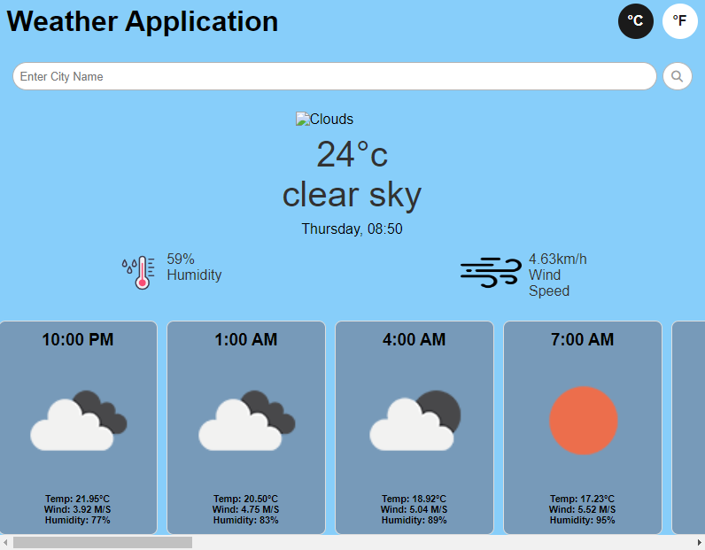

My Fitness
The Weather Dashboard is a dynamic web application that provides real-time weather information and forecasts. Using the OpenWeatherAPI, the app allows users to check current weather conditions and view detailed forecasts for various locations. With an intuitive user interface, users can easily search for weather details, including future weather trends, enhancing their planning and decision-making.
Technologies Used: HTML: For the structural layout of the web application. CSS: For styling and enhancing the visual appeal. JavaScript: For interactive features and integration with the OpenWeatherAPI. OpenWeatherAPI: For fetching real-time weather data and forecasts.